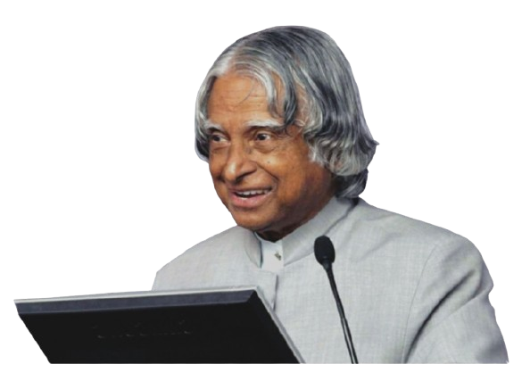

Dr. A. P. J. Abdul Kalam
Missile Man of India
Indian aerospace scientist and the 11th President of India.

Indian aerospace scientist and the 11th President of India.

A.P.J. Abdul Kalam was born on 15 October 1931 in Rameswaram, Tamil Nadu. He studied Physics and later Aerospace Engineering. He worked at DRDO and ISRO, where he helped develop India’s missile programs and launch vehicles. He became known as the “Missile Man of India” for his important role in strengthening the country’s defense. In 2002, he became the 11th President of India and was loved as the “People’s President” because of his connection with students. He passed away in 2015 while delivering a lecture. He is remembered as a great scientist and an inspiration to millions.


“Dream, dream, dream. Dreams transform into thoughts and thoughts result in action.”
“Man needs his difficulties because they are necessary to enjoy success.”
“You have to dream before your dreams can come true.”
“Excellence is a continuous process and not an accident.”
“Small aim is a crime; have great aim.”